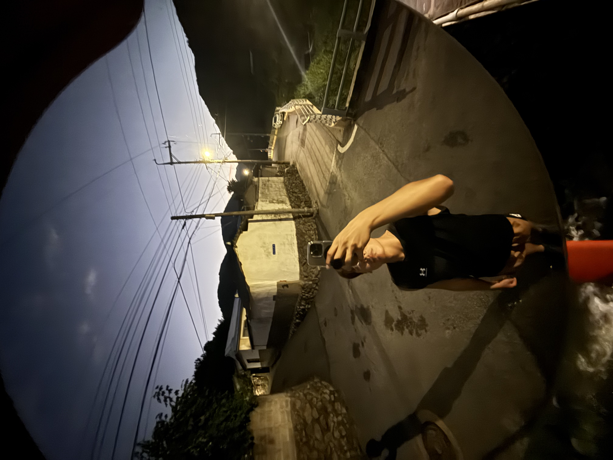
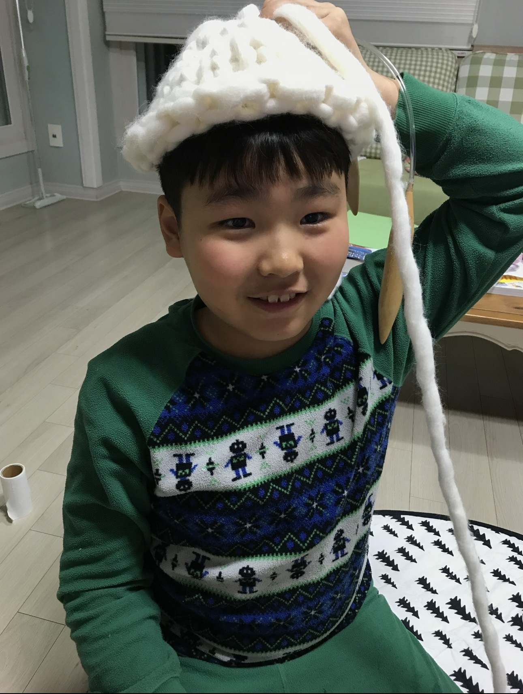
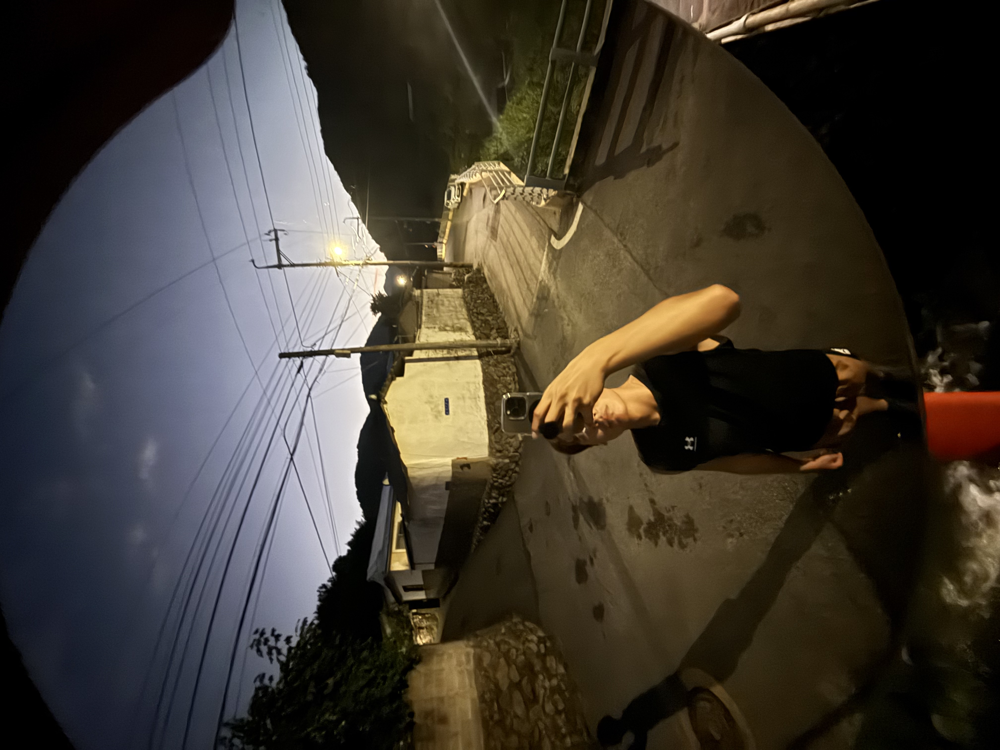
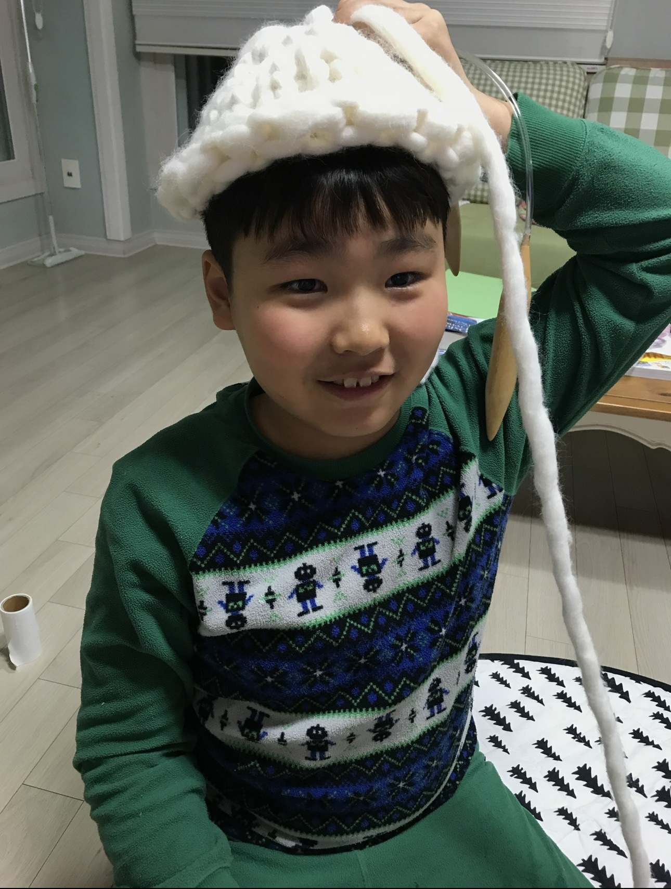
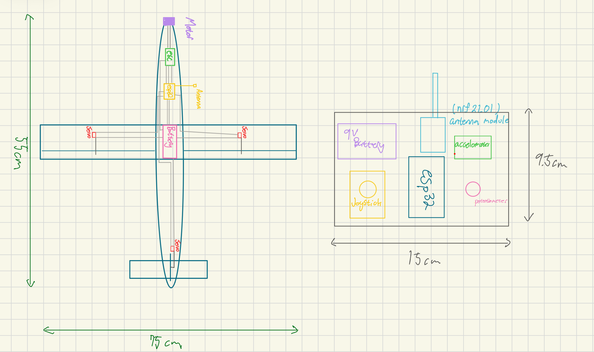

Featured Project: ESP32 RC Plane
My first big hands-on electronics and programming project. I built a remote-controlled plane using an ESP32 microcontroller, learning about aerodynamics, control systems, and wireless communication along the way.
Open full documentation on Notion →